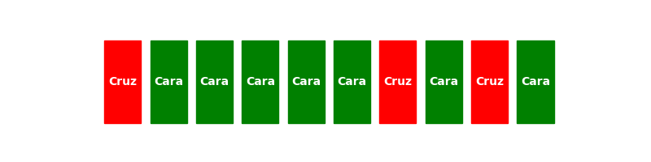
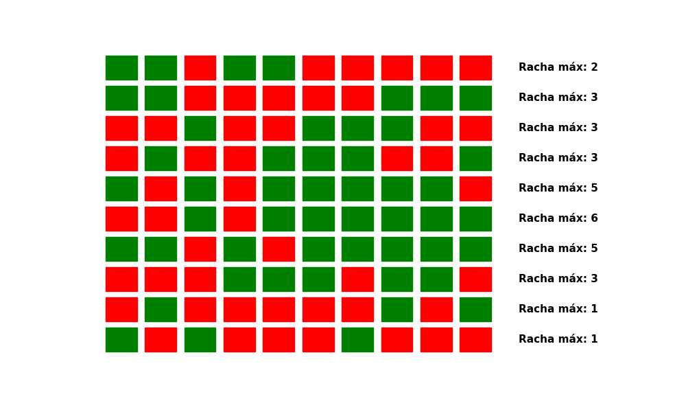
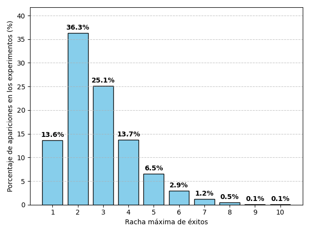
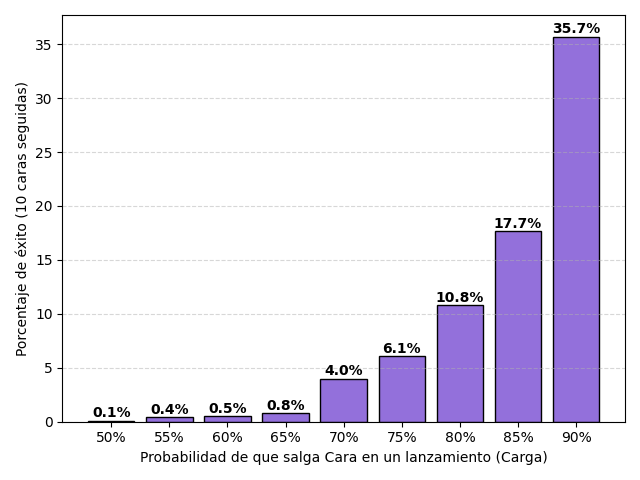

2 Simulaciones
La piedra filosofal
Una simulación nos permite alejarnos de lo abstracto y tocar lo complejo. Esta herramienta es la columna vertebral del libro y por eso es importante empezar por aquí.
Usemos un ejemplo simple: lanzar una moneda.1 Todos sabemos que existe una probabilidad \(p=0.5\) de obtener cara o cruz (ambas opciones son igualmente probables), y en este ejemplo cara cuenta como un éxito. Ahora, yo pregunto: ¿cuál es la cantidad máxima de éxitos seguidos que podemos obtener al realizar diez lanzamientos? Esto se puede resolver de forma analítica con multiplicaciones y potencias, pero ese camino no le interesa a nadie.
Lo más divertido que podemos hacer es programar una moneda y lanzarla. Hacemos diez lanzamientos para un experimento y repetimos el experimento mil veces. Con esto, vamos a tener una buena aproximación a la distribución de probabilidad de obtener \(n\) éxitos seguidos.
Tenemos una moneda digital que obtiene cara o cruz con una probabilidad del 50%. Vamos a realizar 10 lanzamientos como podemos ver en la figura 2.1, y luego hacemos este mismo proceso durante mil experimentos para contar cuántos éxitos seguidos obtuvimos (figura 2.2). Finalmente, vamos a ver la distribución de esas rachas para ver el máximo de éxitos seguidos que podemos esperar si lanzamos una moneda 10 veces.


El resultado es que después de mil experimentos vamos a poder contar cuántas veces aparecieron \(n\) éxitos seguidos, dividirlo entre mil y tener una probabilidad aproximada:
\[\hat{P}(\text{racha de } n) = \frac{f(n)}{1000}\,,\] donde \(\hat{P}\) es la probabilidad aproximada de obtener \(n\) éxitos seguidos, y \(f(n)\) es la frecuencia de nuestras rachas (cuántas veces apareció esa racha en los experimentos).
Antes de mostrarte las probabilidades me gustaría preguntarte qué tan probable crees que es obtener sólo éxitos en 10 lanzamientos. Dame un número del 1 al 100. Espero que lo tengas en mente cuando te revele la verdad. En la figura 2.3 puedes ver el resultado de la simulación. La probabilidad de obtener cara más de 5 veces seguidas se vuelve casi imposible, menos del 5%. Lo más probable es obtener 2 y 3 éxitos seguidos, hasta 4 resulta razonable, pero más allá de esos valores, estamos en el mundo de la fantasía.

Hay un acertijo que pregunta ¿cuál es la probabilidad de obtener cara si ya lanzamos una moneda 10 veces y todas salieron cara?, y la gente se siente tentada a decir que lo más probable es que salga cruz, para estabilizar la cuenta. Con una moneda normal, sabemos que la probabilidad se mantiene en 50%, porque cada lanzamiento es independiente. No importa si ya obtuviste cara 10 o 100 veces, la moneda no lleva la cuenta. Sin embargo, con lo poco probable que es obtener 10 éxitos consecutivos, podemos empezar a dudar de que se trate de una moneda normal. Se vuelve viable que se trate de una moneda cargada.
Aunque el acertijo se haga para un entorno teórico perfecto, nosotros no vivimos en un mundo teórico perfecto. Si una moneda se lanza 10 veces y sale cara 10 veces, ahí hay truco. De hecho, podemos hacer una nueva simulación con monedas cargadas para ver qué tan probable es obtener 10 éxitos seguidos si tenemos una moneda que salta a nuestro favor.

Los resultados están en la figura 2.4. Observa que incluso con una carga del 90% (\(p_{\text{cara}}=0.9\)), obtener 10 éxitos consecutivos apenas alcanza la probabilidad del 35%. Por lo que si alguien te pregunta qué es más probable, que salga cara o cruz, después de que salió cara 10 veces seguidas, puedes decir con mucha confianza que lo más probable es que salga cara, porque la moneda debe estar cargada para obtener esos resultados.
De esta manera cerramos el capítulo, hemos observado el poder de las simulaciones, y también he establecido mi intención con este libro: hay que analizar los problemas más allá del escenario teórico que no se presenta nunca. Si el acertijo de arriba fuera una apuesta con sumas importantes de dinero, el teórico que se pasa de listo diciendo que la moneda no lleva la cuenta iría a la quiebra. Nuestra intuición nos dice que algo anda mal con obtener 10 éxitos seguidos, hay que escucharla. Sobrevivir es más importante que tener la razón.
Para finalizar, quiero agregar que otra ventaja de hacer simulaciones es que nos permite construir un entorno de conocimiento completo, donde sabemos todo lo que se puede saber sobre él, a diferencia de lo que pasa en el mundo real. Entonces, como conocemos la respuesta verdadera que oculta la aleatoriedad, podemos comparar el resultado de los modelos con la realidad más exacta. Lo cual no ocurriría si usáramos datasets abiertos de internet, porque no conocemos la distribución que sigue el mundo y cualquier estimación que hagamos puede meternos en el problema del pavo. No importa qué índice de error usemos para medir los resultados de un modelo, sólo contamos con lo que hemos observado. Por otro lado, una simulación nos ofrece algo sólido para medir nuestros modelos y ver cuáles sobreviven. Y ya que la vida no nos permite ver sus secretos, podemos asumir que un modelo que se comporta mal en una simulación va a ser peor en el mundo real.
Esta y todas las simulaciones presentes en el libro se encuentran en los archivos adjuntos o en el repositorio de GitHub oficial. No incluiré código en este libro porque hoy ni siquiera hace falta programar, lo único que debes hacer es tener la lógica de la simulación bien estructurada y pedirle a un chatbot que lo programe.↩︎